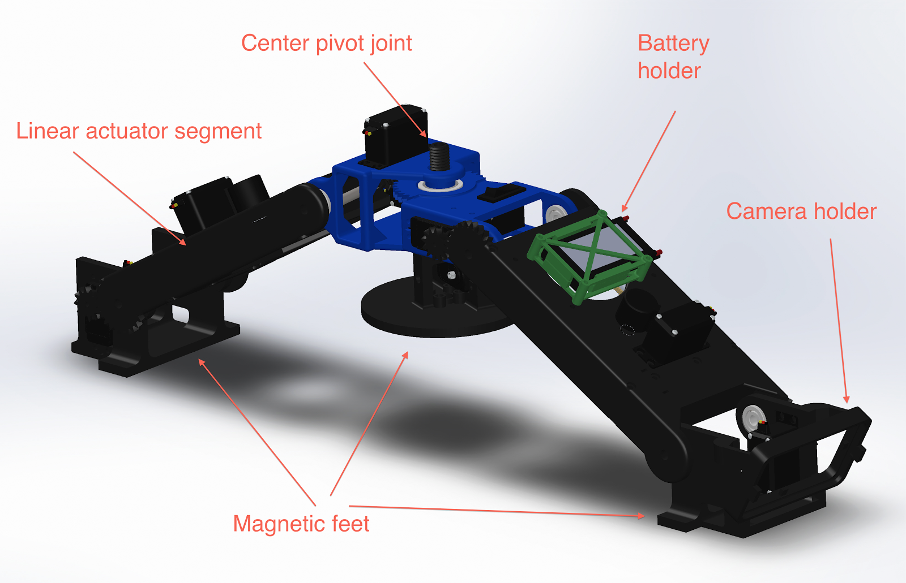
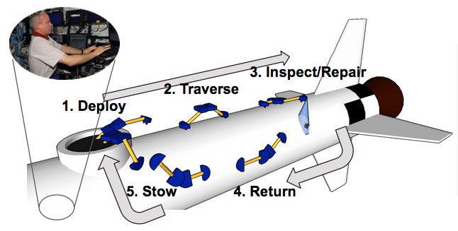
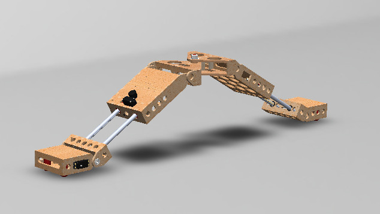

Robot Version 2.0 (Spring Semester)
Final Poster
Pictures

Final Chassis Solidworks Model
Detail of Robot Feet, showing attachment mechanisms
Screenshot of the GUI showing basic features
GUI screenshot showing partial surface inspection, and detected flaws(using simulated camera data)
RViz displaying updated 2.0 URDF file, representing the robot's kinematic model
Videos
Final Video showing the robot's mobility
Simulated Inspection Demo
Path Following Demo
Robot Version 1.0 (Fall Semester)
Pictures

Graphical Representation of initial system concept
Fall Semester Robot Assembly

Solidworks Model of the Fall Semester Robot
Initial power distribution board design
Fall Semester adhesive foot design
Foot Adhesion Testing
Solidworks model for the foot pad

Fall Semester Engineering GUI